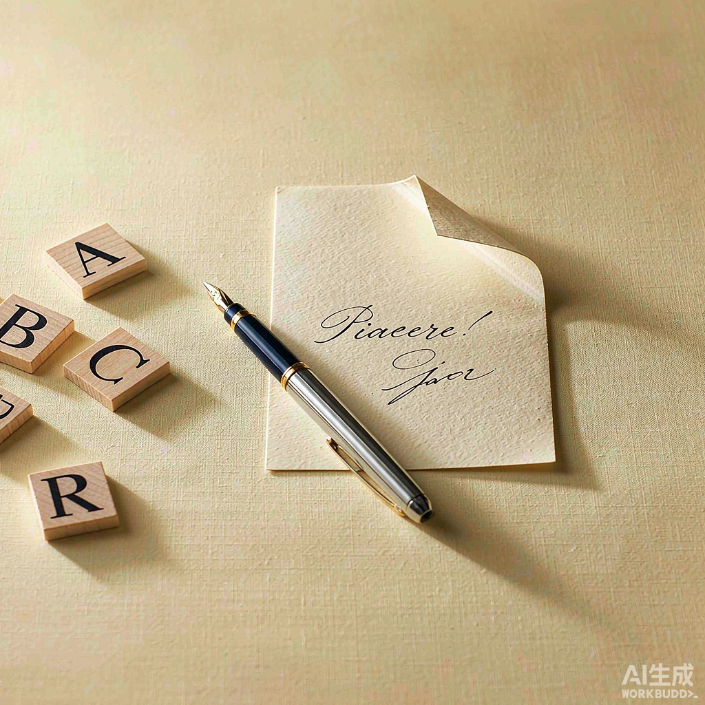

Come ti chiami?
/ˈkome ti ˈkjami/ · domanda (informale)la domanda più comune per chiedere il nome, tra persone che si danno del tu
中文：你叫什么名字？（非正式，熟悉的人之间）
Ciao! Come ti chiami? 中文：嗨！你叫什么名字？
中文：很高兴认识你！——自我介绍与拼写姓名。
学习目标：① 跟读意大利语字母表；② 学会说并逐字母拼写自己的名字和姓氏。意大利语为主，中文帮助理解。

朗读使用浏览器意大利语语音
la domanda più comune per chiedere il nome, tra persone che si danno del tu
中文：你叫什么名字？（非正式，熟悉的人之间）
Ciao! Come ti chiami? 中文：嗨！你叫什么名字？
la risposta più naturale per dire il proprio nome: verbo riflessivo chiamarsi
中文：我叫……（反身动词 chiamarsi：mi chiamo 我叫 / ti chiami 你叫 / si chiama 他·她·您叫）
Mi chiamo Hyun-woo. E tu? 中文：我叫 Hyun-woo。你呢？
per chiedere il cognome; attenzione: qual è si scrive senza apostrofo
中文：你姓什么？（qual è 无撇号！）
Qual è il tuo cognome? — Il mio cognome è Chen. 中文：你姓什么？——我姓 Chen。
per chiedere la grafia di una parola o di un nome, lettera per lettera
中文：……怎么写？怎么拼写？
Come si scrive il tuo nome? — H-Y-U-N-W-O-O. 中文：你的名字怎么拼写？——H-Y-U-N-W-O-O。
si dice quando si incontra qualcuno per la prima volta; la risposta è Piacere mio
中文：很高兴认识你！（初次见面的标准用语）
— Piacere! — Piacere mio! 中文：——很高兴认识你！——我也是！
la risposta standard a grazie
中文：不客气。（grazie 的标准回答）
— Grazie! — Prego. 中文：——谢谢！——不客气。
Mi chiamo Hyun-woo.
中文：我叫 Hyun-woo。
Il mio cognome è Park.
中文：我姓 Park。（H-Y-U-N-W-O-O · P-A-R-K）
Mi chiamo Arisa.
中文：我叫 Arisa。
Il mio cognome è Suttirat.
中文：我姓 Suttirat。（A-R-I-S-A · S-U-T-T-I-R-A-T）
Mi chiamo Haruto.
中文：我叫 Haruto。
Il mio cognome è Tanaka.
中文：我姓 Tanaka。（H-A-R-U-T-O · T-A-N-A-K-A）
Mi chiamo Ling.
中文：我叫 Ling。
Il mio cognome è Chen.
中文：我姓 Chen。（L-I-N-G · C-H-E-N）
尊称（Lei）场景：conoscerLa、il suo nome · 每句可单独朗读
Insegnante Salve, sono la signora Smith. Piacere di conoscerLa.
Hyun-woo Salve, signora Smith. Piacere mio.
Insegnante Come si chiama?
Hyun-woo Mi chiamo Hyun-woo.
Insegnante Hyun-woo?
Hyun-woo Sì.
Insegnante Come si scrive il suo nome?
Hyun-woo H-Y-U-N-W-O-O.
Insegnante H-Y-U-N-W-O-O, giusto?
Hyun-woo Sì, esatto.
Insegnante Qual è il suo cognome?
Hyun-woo Il mio cognome è Park.
Insegnante Come si scrive?
Hyun-woo P-A-R-K.
Insegnante Grazie.
Hyun-woo Prego.
5 个可直接套用的表达
问名字的两种说法：非正式用 ti（你），尊称用 Lei（si chiama）。对老师、初次见面的长辈用尊称。
中文句型：你叫什么名字？/ 您叫什么名字？
Come si chiama? — Mi chiamo Arisa.中文：您叫什么名字？——我叫 Arisa。
自我介绍叫什么、姓什么。物主形容词与名词配合：il mio nome / il mio cognome（阳性单数）。
中文句型：我叫…… / 我姓……
Mi chiamo Haruto. Il mio cognome è Tanaka.中文：我叫 Haruto，我姓 Tanaka。
问单词或姓名如何逐字母拼写，回答直接读字母。传统说法是 Come si compita?
中文句型：……怎么拼写？
Come si scrive il tuo cognome? — S-U-T-T-I-R-A-T.中文：你的姓怎么拼写？——S-U-T-T-I-R-A-T。
初次见面互道"很高兴认识你"。正式场合也可说 Piacere di conoscerLa（认识您很高兴）。
中文：很高兴认识你！——我也是！
— Piacere! — Piacere mio!中文：——很高兴认识你！——我也是！
致谢与回应的标准搭配。Prego 也可以回应别人的感谢以外的请求（请、请进）。
中文：谢谢。——不客气。
— Grazie! — Prego.中文：——谢谢！——不客气。
1. Insegnante: Come si scrive il tuo nome?
Ling: ______.
2. Insegnante: Come si scrive il tuo nome?
Haruto: ______.
3. Insegnante: Come si scrive?
Arisa: ______.
4. Insegnante: Come si scrive?
Hyun-woo: ______.
1. Insegnante: Come ti chiami?
Haruto: Il mio ______ è Haruto.
2. Insegnante: Qual è il tuo cognome?
Haruto: Il mio ______ è Tanaka.
3. Insegnante: Come si scrive?
Haruto: ______.
4. Insegnante: Come ti chiami?
Ling: Il mio ______ è Ling.
5. Insegnante: Qual è il tuo cognome?
Ling: Il mio ______ è Chen.
6. Insegnante: Come si scrive?
Ling: ______.
1. Ciao.
2. Piacere!
3. Hyun-woo, giusto?
4. Mi chiamo Haruto.
5. T-A-N-A-K-A.
6. Grazie.
1. Insegnante: Salve, sono la signora Smith. Piacere di conoscerLa.
Arisa: ______, signora Smith. ______ mio.
2. Insegnante: Come si chiama?
Arisa: Mi ______ Arisa.
3. Insegnante: Come si scrive il suo nome?
Arisa: A-R-I-S-A.
Insegnante: A-R-I-S-A, giusto?
Arisa: Sì, ______.
4. Insegnante: Qual è il suo cognome?
Arisa: Il mio ______ è Suttirat.
5. Insegnante: Come si scrive?
Arisa: S-U-T-T-I-R-A-T.
6. Insegnante: Grazie.
Arisa: ______.
Ciao!
Piacere mio!
Mi chiamo Xiaoxia.
Come si scrive? X-I-A-O-X-I-A.
Il mio cognome è Wang.
W-A-N-G.
Prego.